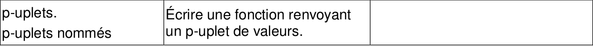

CH5 : p-uplets⚓︎
Programme officiel

1. Les séquences en Python⚓︎
Il est possible de "stocker" plusieurs grandeurs dans une même structure, ce type de structure est appelé une séquence. De façon plus précise, nous définirons une séquence comme un ensemble fini et ordonné d'éléments indicés de 0 à n-1 si cette séquence comporte n éléments.
On étudie plus particulièrement 2 types de séquences : les tuples et les tableaux (il en existe d'autres que nous n'évoquerons pas ici).
2. Définition des tuples⚓︎
À savoir
Les tuples (appelés p-uplets dans le programme officiel de NSI) sont une collection d'objets ordonnée (une séquence) mais NON MODIFIABLE.
Construction d'un tuple :
>>> mon_tuple = (5, 7, 4)
>>> type(mon_tuple)
<class 'tuple'>
>>> taille = 600, 800
>>> type(taille)
<class 'tuple'>
3. Accès aux éléments d'un tuple⚓︎
Savoir faire
L'accés aux éléments d'un tuple se fait par un indice entre crochets. Les éléments sont numérotés de gauche à droite à partir de 0.
>>> a = (12, 25, 6)
>>> a[0]
12
>>> a[2]
6
Pour connaître le nombre d'éléments d'un tuple, on peut utiliser la fonction len.
>>> t = (7, 5, 2, 9)
>>> len(t)
4
On peut également accéder aux éléments par indice négatif. Dans le cas précédent, le dernier élément du tuple t est 9, son indice est 3.
>>> t[3] # accés au dernier élément
9
>>> t[-1] # accés au dernier élément par indice négatif
9
L'indice -1 est équivalent à len(t) - 1. Comme len(t) vaut 4, 4-1 = 3, ce qui est l'indice du dernier élément.
4. Tentative de modification d'un tuple⚓︎
À connaître
Une fois créé, un tuple n'est pas modifiable. On dit immutable. On dit que les tuples NE supportent PAS l'affection d'éléments  ou les item assignment
ou les item assignment  .
.
>>> b = (9, 7, 1)
>>> b[0] = 4
---------------------------------------------------------------------------
TypeError Traceback (most recent call last)
<ipython-input-7-5fe525706b2b> in <module>()
----> 1 b[0] = 4
TypeError: 'tuple' object does not support item assignment
5. Parcours d'un tuple⚓︎
5.1 Parcours par indice⚓︎
Savoir faire
Pour parcourir les éléments d'un tuple, on peut utiliser les indices des éléments (tuple de n éléments, indice allant de 0 à n-1 d'ou l'utilisation de l'itérateur range(len(tuple))).
>>> c = (12, 25, 6)
>>> for i in range(len(c)):
print(c[i])
12
25
6
5.1 Parcours par élément⚓︎
Savoir faire
On peut également parcourir les éléments directement car un tuple est un itérable par définition.
>>> for elt in c :
print(elt)
12
25
6
6. Construction d'une fonction renvoyant un tuple⚓︎
def division(a, b):
# fonction renvoyant le tuple (quotient, reste) de la division euclidienne de a par b.
q = a // b
r = a % b
return (q, r)
>>> division(49,12)
(4,1)
Sources
Page construite à l'aide de :